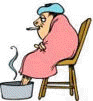

Acute Conditions
Important: The content of this page is not intended to be a substitute for taking proper medical advice and should not be relied upon in this way.

Homeopathy can be very effective in helping with many colds, flu, urinary tract infections, stomach aches, headaches, coughs, diarrhea, strains, sprains and injuries, and a wide variety of other short-term illnesses.
What Are Acute Illnesses?
These ailments fit the definition of acute illnesses: they are usually intense, have come on suddenly, are new or different from other ailments you have experienced, if you do nothing, they will eventually go away on their own and you are otherwise in good health.
Acute vs. Chronic Conditions
However, if you commonly get the same runny nose every spring, if you always get the same headache around your menstrual cycle, if you get diarrhea every time you get emotionally upset, these ailments are not acute ones, they are deeper problems because you have experienced them frequently in the past.
The deeper problems would benefit from constitutional homeopathic care, which focuses on strengthening your own constitution so these ailments no longer bother you.
Acute Prescribing Questionnaire
Please save this acute prescribing questionnaire and have it by your phone or stored in your computer for the next time you call for help with an acute ailment. This questionnaire helps us take a complete case and find a good remedy for you quickly and efficiently.
1. Onset
Did the complaint come on suddenly or gradually?
2. The Cause
What happened? What was going on at, or about, the time of the occurrence?
3. Describe the Pain or Sensations
Describe the pain or other feelings or sensations. Does it extend anywhere, does it shoot anywhere? For instance, "It feels like there's a crumb in my throat, I'm constantly trying to swallow. The pain shoots to my left ear."
4. Appearance
What does the person, or the part that's bothering the person, look like; anything remarkable? Red skin, droopy eyes, raised spots, etc.?
5. Location
Where on the body?
6. Modalities (Better/Worse)
What makes the complaint better or worse? Consider these possibilities:
- Heat or cold
- Bathing
- Warm rooms or fresh air
- Drafts
- Motion
- Time of day
- Position (lying, sitting, standing)
- Stimuli - conversation, noise, light, touch, pressure, massage, music
- Company or consolation
7. Accompanying Symptoms
Additional symptoms that came with the main complaint - for instance, pain with crying; pain with excessive salivation; pain with nausea - the things that have come along for the ride, fellow-travelers, in other words.
8. Discharges
Describe any discharges and their color, odor and consistency. A discharge is anything liquid that's coming out, oozing out, etc. from any part of the body. So, for instance, runny nose, diarrhea, tearing and so on.
9. General Symptoms
These are all the "I" symptoms: I'm hot, I'm cold, I'm thirsty, I'm tired, I'm sad, I'm irritable, I'm hungry, I want pickles, etc. These symptoms are particularly important if the person, for example, is usually chilly, but becomes hot with this headache.
10. Mental-Emotional Changes
Have the mental or emotional characteristics of the person changed from how they are normally, and if so, in what way? What is different mentally and emotionally? For example: A child who is normally self-confident and outgoing suddenly, with an earache, becomes weepy and clingy.
11. What Does the Person Say?
For instance: "I'm fine, leave me alone", "Don't leave!", "I wanna go home!", "I want ice", etc. These symptoms are particularly important if the person, for example, likes to be around people, but with their cold wants to be left alone and not talked to.
12. Thirst
Is the person thirsty, not thirsty, what temperature drinks, what kind of drinks, does he only want sips, or gulps, does he drink a little bit frequently or a lot infrequently, and so on.
13. Fever
Is there a fever? What temperature?
14. Sweating
Is the person sweating? Where? When?
15. Odors
Are odors an issue, such as bad breath, foul odors of any sort?
16. Most Striking Features
What is most striking about the condition? What is most peculiar - for instance, person is cold but heat and covers make them feel worse; the person has burning pains but is better for being covered and with hot drinks like tea.
Why Such Detailed Information?
This is why I'm asking you to give me such detailed information: Even if you've already given me a complete case at a previous appointment and you are calling to report that you are depressed, or anxiety-ridden or have low back pain, I still need a complete set of information about how you are right now.
I cannot prescribe on "depression," I cannot prescribe on "low back pain," because these labels don't give me enough information to choose a good remedy for you.
Homeopathy is Very Particular
We don't treat "colds", we treat YOUR cold. Consider that the last time you had a cold it was probably very different from the cold you have now. We treat each ailment as though it is a stranger we'd never met and need to get to know.
You wouldn't say to us, "I'd like you to meet my friend, the human being." That tells us nothing, right? But similarly, saying, "I have the flu," also tells us nothing, even though we acknowledge that to an allopathic doctor, it would be all the information he would need to know.
Example: Two Different Flu Remedies
Arsenicum Album Flu
Symptoms:
- Restless with your flu
- Anxiety-ridden
- Thirsty for sips of water
- Need company
- Chilly
- Weak
- May have diarrhea
This flu would probably respond well to the remedy Arsenicum Album.
Bryonia Alba Flu
Symptoms:
- Want everyone to leave the room
- Need to be quiet and still
- Worse from even answering questions
- Very dry and very thirsty
- In feverish delirium say, "I wanna go home!" (even when already home)
- Headache is the worst part of illness
This flu would probably do well on the remedy Bryonia Alba!
One diagnosis ("a cold"), two very different remedies.
Ready to Get Help?
If you're experiencing an acute condition and need assistance, please contact us. Make sure to have the information from the questionnaire above ready when you call or email.